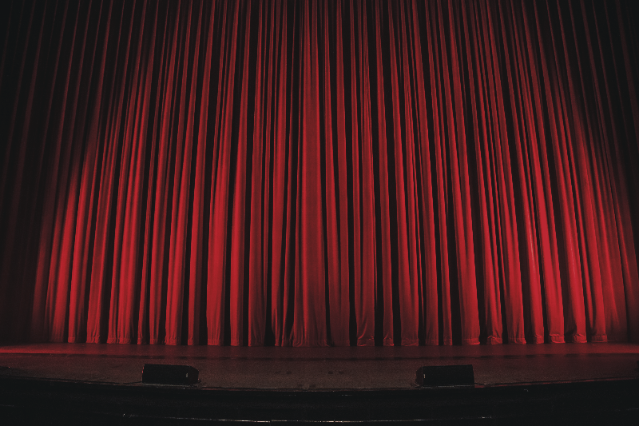

a movie

Spending an hour to pick what movie to watch can really kill the mood, so let us do it for you. If you are looking for another kind of movie night, come to BLIND DATE WITH A MOVIE. All you have to do is choose where and when you want to come and let yourself be surprised. Here's the list of cinemas where the event will take place:
- Cinema Florin Piersic
- Cinema Dacia
- Cinema Victoria
- Cinema ARTA
- Cinema Mărăști
See the CALENDAR for available dates
a concert

Concerts are fun just as they are, but imagine going to a concert and not knowing who is performing: now that's something else! They're all about the experience and the atmosphere, and we'll give you one you'll never forget. Here's where BLIND DATE WITH A CONCERT will take place:
- Muzeul de Artă
- Parcul Cetățuie
- Rectorat UBB
See the CALENDAR for available dates
the performing arts
We also have a more elegant experience for you. If theatre, ballet and classical music are some things you're interested in, we invite you to BLIND DATE WITH THE PERFORMING ARTS. Dress code: fancy. Here is where it will take place.
- Teatrul Național Lucian Blaga
- Opera Maghiară